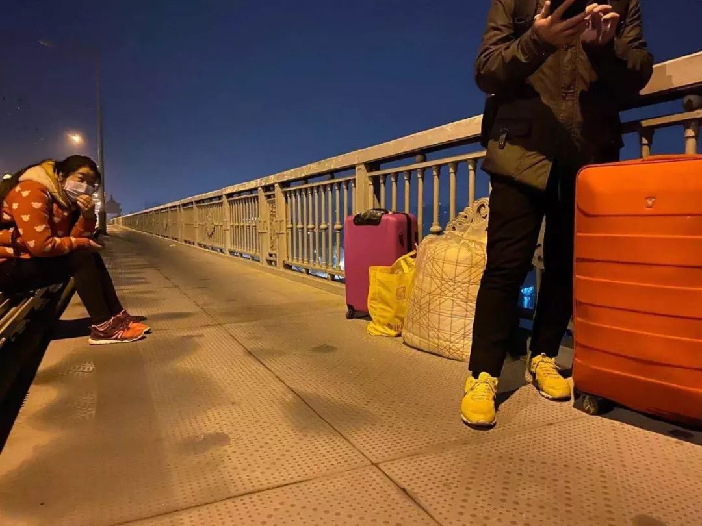
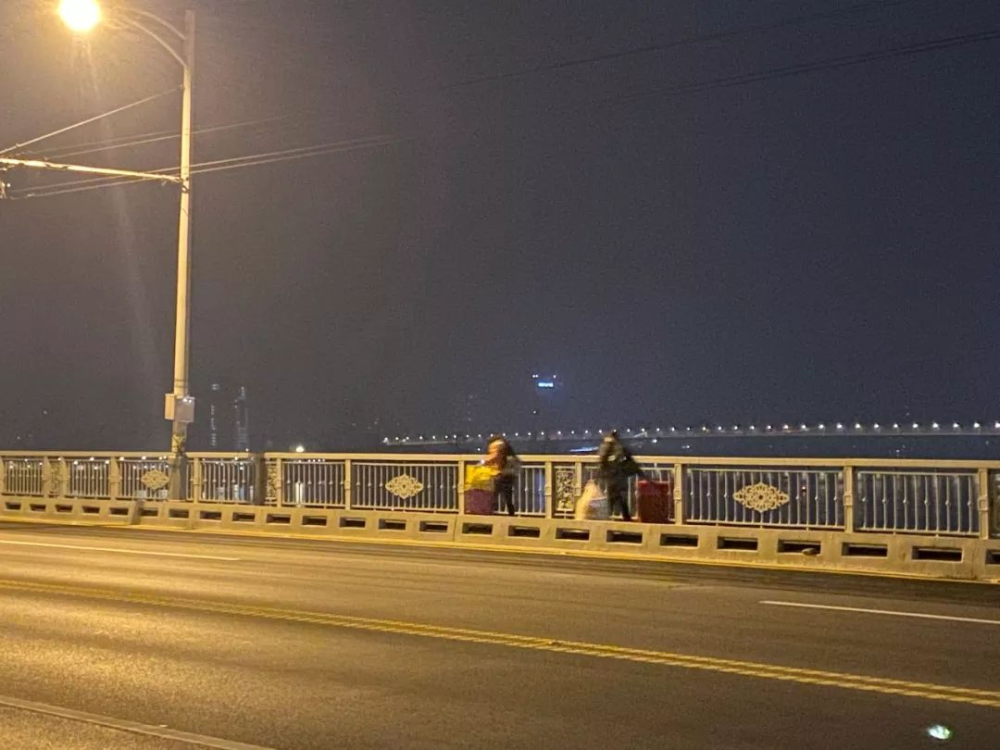
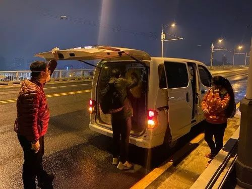

叶青：武汉出“硬招”了！
原文链接 备份链接 非常时期，武汉成了全国人民挂念、祈福的城市。封城后，武汉人民的真实生活是什么样？ 武汉在发生哪些变化？ 正和岛自1月26日起特别推出“叶青专栏”。叶青是一位定居武汉40年的市民，也是一名学者和官员。在过往多期的专栏文章 …

疫情蔓延时，在无数依然相爱或曾经相爱的人眼里，只要能够平安，就是最好的庆祝
文 |《财经》特派武汉记者 刘以秦
编辑 | 余乐
2月14日，这是很多人眼里一个相爱的人相聚的日子。截止2月14日上午11点，武汉新冠肺炎确诊人数已经达到35991例，较昨日增加3910例，疫情还在蔓延，武汉依旧处于“封城”状态。
对于还留在武汉的人们来说，今年的2月14日最为特殊。没有鲜花，餐馆、电影院、商场大门紧闭，路上行人戴着口罩，看不清脸上的表情。
一些相爱的人因为疫情分隔两地；一些爱人们因为疫情，即使见面也不能触碰；一些曾经相爱的人因为疫情分手；还有一些人，因为疫情，更能体会到爱情的来之不易。
流浪武汉：“两个人在一起就够了”

《财经》记者刘以秦 摄
2月11日上午，袁智清洗了个热水澡，吃到了半个多月以来第一顿米饭，美美地睡了一觉。他和老婆已经在武汉滞留了18天，在街头流浪了5天。
1月23日，除夕前一天，武汉宣布“封城”，在深圳打工的袁智清早早买好了车票，准备带着老婆回老家湖北十堰过年，在武汉换乘。他看到新闻说武汉要“封城”，打电话询问12306，客服告诉他可以换乘，但不能改签。
1月24日早上，他们抵达武汉，被车站工作人员告知，在解封之前，他们不能离开武汉，再拨打12306，就一直打不进去了。
自武汉“封城”起，因各种原因滞留在武汉的人不在少数。一位从上海回重庆老家过年的男士，临时决定来武汉看望朋友，最后只能留在武汉过年；来自江西的一家四口，年前来武汉自驾游，没来得及撤离，滞留在武汉；还有一位来自黑龙江的19岁女生，陪男朋友回武汉过年，封城后又因家暴与男朋友分手，一个人滞留在武汉。
袁智清在贴吧里找到了许多和他一样滞留在武汉的人，加入了“滞留武汉的外地人员”微信群，这个群里已经有超过230个滞留者，他告诉《财经》记者，大约一半是来武汉探亲的，另一半是来转车、旅游或没来得及走的务工人员。
对于一些来探亲或是务工的滞留者，大多有落脚处，而像袁智清这样，在武汉举目无亲的滞留者，一时找不到住处，只能流落街头。
疫情持续蔓延，武汉所有部门几乎都在超负荷运转，城市资源有限，绝大部分可运营的酒店被政府临时接管或征用，用于医护人员的住宿和疑似病人的隔离，即使偶有空房间，也不接受客人预订。
为了能够就近得到撤离信息，袁智清选择在武汉天河机场附近安置，1月24日，他和老婆住进机场附近的一个小旅馆，一天的房费68元，每天他们只能吃泡面或者饼干面包。2月6日，发生了一件离奇的事情，他一直放在包里的银行卡不见了。
“一直都是用微信支付，从来没把银行卡拿出来过，”袁智清也很疑惑，随后他又发现由于银行卡被冻结，微信支付也不能付款。
他身上还有一些现金，要留着给老婆家人发红包。他也在计算，解封遥遥无期，之后还需要花钱吃饭，不能把钱都花在住宿上。
2月6日，他和老婆开始流浪。他找到一个废弃的地下室，疫情期间也没人管理，他们就住在里面，白天的时候去街上找路边小店门口的电源给手机充电，然后在网上寻找可能的求助渠道。
他给一切能够找到的联系方式打电话，包括市长热线、各级政府部门、救助站、110等等，市长热线的回复是已经记录在案，等待通知，其他的要不就是回复称无能为力，要不就是给他另外一个联系方式，他打过去又被告知“无法解决”。
2月10日，袁智清接到了电话通知，他可以在第二天入住武昌区的一个救助酒店。酒店距离他所在的地方有50公里。他们两个人已经筋疲力尽，不可能再拖着大包小包步行前往，他试着在路边拦车，一辆出租车停了下来，表示可以送过去，收费500元。
特殊时期，他也能理解，不过出租车司机并未把他们送达目的地，在距离目的地还有5公里的武汉长江大桥就停车，称不能过桥，让他们下车自行前往。

《财经》记者刘以秦 摄
此时已经是深夜11点，袁智清带着老婆继续步行，夜晚的气温降得很低，还开始飘起小雨滴，他们走100米就要坐下歇一会儿。
一位好心的志愿者遇到了他们，询问情况后，愿意免费将他们送到救助站，并赠送了热食和牛奶。救助站酒店的工作人员表示，必须要等到第二天上午才能入住，该志愿者恳求工作人员让他们可以睡在酒店大堂里，并保证他们绝对没有发热的情况。

《财经》记者刘以秦 摄
2月11日的凌晨，袁智清终于在酒店大堂住下，他发了一条朋友圈，“我的生日礼物”，配图是志愿者送的食物，和他在武汉长江大桥上给老婆拍的一张照片。

袁智清是经由家人介绍，认识了现在的老婆，“她是个孤儿，身体也有一些缺陷，”他告诉《财经》记者，一开始他并不知情，知道后又放心不下，“她很善良，也很懂事。”
在武汉漂泊的这几天，他还专门教老婆认字，偶尔老婆也会闹情绪，有一些争吵，好在最大的困难已经过去，2月12日，他告诉《财经》记者，救助站还给他们发了水果。
2月13日，《财经》记者问他，明天有什么计划吗？他说：“两个人在一起，就够了。”
分手武汉：“我不会再跟他联系了”
如果时间倒流，黑龙江女生王晶如绝对不会选择来武汉。
1月1日，王晶如跟着武汉籍男友一起来武汉。男友告诉她，可以在武汉多玩一段时间，过完年再回去，她答应了。他们住在武昌区的一家酒店里，1月23日凌晨武汉宣布“封城”，她并没有注意到这条消息，直到当天下午才被朋友告知，已经不能走了。
2月1日，她与男友发生了争吵，男友打了她，她从酒店楼梯上摔了下来，扭到了脚。她坚定地和男友分手了，并表示：再也不要联系。
她还立刻打110报警。对方告诉她，这种情况应该找妇联。她给妇联打电话，得到的回复是：“现在疫情真的很严重，我们都在一线做捐赠工作，确实现在没有余力。”
酒店老板担心她住在这里，男友会再上门找她麻烦，就帮她转移到了洪山区的另一家酒店。住了2天后，她身上的钱花完了，父母也无法提供持续的经济援助，她也坚持不愿联系男友。
过去几天，她也在持续拨打市长热线和救助站的电话，但都未能得到救助。
一位负责救助的政府工作人员告诉《财经》记者，由于资源实在有限，他们只能通过求助电话，筛选最困难的人群优先救助，“每天一个工作人员能接到上百个救助电话，我们确实没办法全部救助。”
特殊时期，一切都在超负荷运转，所有力量都集中起来，优先救助病人，共同抗击疫情。2020年2月14日比往年特殊，在无数依然相爱或曾经相爱的人眼里，只要能够平安，就是最好的庆祝。
相思武汉：“从来没有分开这么久”
这是郭伟医生与新婚妻子胡芹分开的第25天，1月20日他们在湖北黄冈老家举办了婚礼，婚礼第二天，他就返回武汉值班，之后武汉“封城”，他们就再也没见过面。
“我们认识4年了，以前没有分开超过一个星期。”郭伟告诉《财经》记者。妻子试图返回武汉陪他，但黄冈由于疫情严重，也全面封锁，人们连出门买东西都受限。
不过，就算胡芹能够回到武汉，他们也很难见面，一线的医生每天进出病房，不能回家。
郭伟所在的医院是疫情期间第一批定点医院，自从开始收治发热病人，他就再也没有离开过医院，不值班时就住在医院对面的酒店里，随时响应。
妻子支持他，虽然每天担心他吃不好，睡不好，但“我知道这是他的职责。”除夕那天，胡芹发了一条朋友圈，写道：“武汉加油！你要平安。”
郭伟自认为并不是一个浪漫的男人，但在疫情期间，他坚持每天给妻子发一句“爱你哦”。“以前他都不会说这种话的。”胡芹告诉《财经》记者。
有一天郭伟要进病房值班，但由于物资紧缺，医院分配给他的口罩并不符合医用标准，只是普通的防尘口罩，从病房出来以后，他很后怕。几天后，他感觉自己应该没事，还是告诉了妻子，并收获了一顿“痛骂”。
胡芹生气的原因不光是他的隐瞒，更多的是担心。有一次，胡芹在新闻上看到他所在的医院所有的防护服都用光了，一下子慌了，打电话过去也打不通，“想帮助他们，但是什么都做不了，只能待在家里不添乱。”
疫情结束之后，想做的第一件事是什么？郭伟回答：“想一起去吃火锅，最好还能一起出去旅游。”《财经》记者又将这个问题发给胡芹，得到的回复是：“第一时间拥抱他，然后一起去吃火锅。”

▲点击图片查看更多疫情报道
责编 | 蒋丽 lijiang@caijing.com.cn
本文为《财经》杂志原创文章，未经授权不得转载或建立镜像。如需转载，请在文末留言申请并获取授权。
原文链接 备份链接 非常时期，武汉成了全国人民挂念、祈福的城市。封城后，武汉人民的真实生活是什么样？ 武汉在发生哪些变化？ 正和岛自1月26日起特别推出“叶青专栏”。叶青是一位定居武汉40年的市民，也是一名学者和官员。在过往多期的专栏文章 …
原文链接 备份链接 _ 随着疫情蔓延，春节前出国前往新加坡的湖北人挂念至亲，但是航空公司纷纷停飞，他们的回家之路几经周折后出现转机 _ 《财经》一线报道： 海外滞留旅客由中国包机抵达武汉现场 文 |《财经》记者 陈亮 刘以秦 编辑 | 施 …
原文链接 备份链接 2月8日，元宵节。在这一天，一家人和和美美地吃完象征着团圆的汤圆，传统的农历春节就进入了尾声。但没能回到老家浙江、留在武汉的申明，看了看窗外的天气，云朵层层，太阳偶尔洒下些许阳光。起床后，他一边听着疫情播报，一边准备亲 …
原文链接 备份链接 “安全套大卖”不只是一个玩笑，还有哪些意想不到的逆势上扬？ 文 |《财经》记者 杨立赟 编辑 | 余乐 今年2月14日，你收到玫瑰花了吗？ 各地对疫情严防死守，女士们在办公室收到一束玫瑰、接受同事们注目礼的戏码，不太 …
原文链接 备份链接 岛语 非常时期，武汉成了全国人民挂念、祈福的城市。封城后，武汉人民的真实生活是什么样？ 正和岛自1月26日起特别推出《叶青：我在武汉疫区的第N天》专栏。叶青是一位定居武汉40年的市民，也是一名学者和官员。接下来的一段时 …